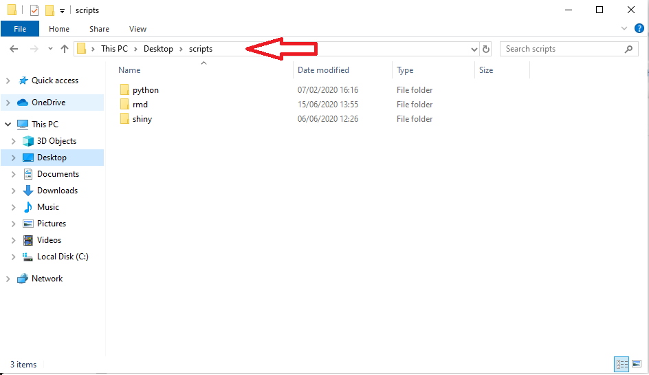
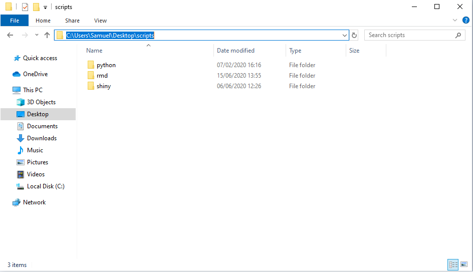
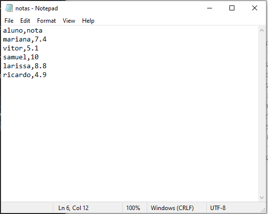

Uma Breve Introdução ao R
1 Princípios Básicos
1.1 Primeiros Passos
R é uma linguagem orientada à objetos que são armazenados na memória ativa do computador. Uma variável é um objeto que irá representar um valor ou expressão atribuído a ela. Só é possível armazenar um dado ou expressão pra cada variável, quando for atribuído mais de uma informação, o dado que estava antes armazenado será subscrito.
1.1.1 Comandos Básicos
Primeiramente, para a melhor utilização do R, é necessário saber alguns comandos básicos. São eles:
control + L: Limpar o consolecontrol + Roucontrol + enter: Compilar o código escritorm(list = ls()): limpar memória#: fazer comentários no código
1.1.2 Atribuição de Valores
Pode-se atribuir um valor à um objeto dentro do ambiente do R de duas formas diferentes: <- e =.
Exemplos:
# atribuindo o valor 10 para a variavel x
x <- 10
x## [1] 10# atribuindo o valor 5 para a variavel y
y = 5
y## [1] 5Observação: Vale ressaltar que o sinal de igual é usado para a atribuição de valores, e não denotar igualdade, para isso é usado dois sinais (==).
1.1.3 Tipos de Variáveis
Toda variável declarada possui uma classe específica, de acordo com o seu conteúdo.
Para verificar a classe de uma determinada variável, utiliza-se a função class.
Exemplos:
# numérica
x <- 1.5
class(x)## [1] "numeric"# caractere: palavras, textos, etc
y <- "estatística"
class(y)## [1] "character"# lógico: TRUE, FALSE
z <- 4 < 5
class(z)## [1] "logical"1.1.4 Utilizando Ajuda (help)
Para buscar ajuda no R, pode-se usar a função help() ou o operador ?.
Exemplos:
# Buscando ajuda sobre a função log
help(log)
?help1.2 Operações Básicas
No ambiente R, existem uma série de operações básicas que são muito usuais e de grande importância. Tais como:
1.2.1 Operações simples
^: Potencialização/: Divisão*: Multiplicação+: Adição-: Subtração
1.2.2 Operações lógicas
<: Menor<=: Menor ou igual>: Maior>=: Maior ou igual==: Igual!=: Diferente&: AND!: NOT|: ORFALSE ou 0: Valor booleano falso (0)TRUE ou 1: Valor booleano verdadeiro (1)
1.2.3 Operações matemáticas
abs(x): Valor absoluto de xlog(x,b): Logaritmo de x com base blog(x): Logaritimo natural de xlog10(x): Logaritmo de x na base 10exp(x): Exponencial elevado a xsin(x): Seno de xcos(x): Cosseno de xtan(x): Tangente de xround(x, digits = n): Arredonda x com n decimaisceiling(x): Arredonda x para o maior valorfloor(x): Arredonda x para o menor valorsqrt(x): Raiz quadrada de x
1.3 Estruturas Básicas
1.3.1 Vetor
Um vetor é um conjunto de valores atribuidos à uma variável. Para criar um vetor, utiliza-se o comando c().
Exemplos de vetores:
vetor1 <- c(1, 1, 2, 3, 5, 8)
idades <- c(17, 20, 22, 18, 30)
alunos <- c("Ricardo", "Samuel", "Vitor", "Ellen", "Mariana")
vetor2 <- c(0, vetor1, 0)Existem funções que permitem criar e manipular vetores com características com maior facilidade, a seguir, estão algumas delas:
Sequências
Para criar um vetor baseado em uma sequência, pode-se usar a função seq(), que cria um vetor do valor A até o valor Z.
Exemplos:
# Criar um vetor de 1 a 10
vetor1 <- seq(from = 1, to = 10)
vetor1## [1] 1 2 3 4 5 6 7 8 9 10#outra forma de criar o vetor de 1 a 10
vetor1.1 <- 1:10Perceba que, por padrão, o intervalo entre os números gerados é 1. Porém, também pode-se alterar a distância entre os elementos ( ou a “distância de passos”), com o argumento by = N, e a quantidade de elementos criados, com o argumento length.out = N.
Exemplos:
# Criar vetor de 1 a 10, com tamanho do passo = 2
vetor2 <- seq(from = 1, to = 10, by = 2)
vetor2## [1] 1 3 5 7 9# Criar vetor de 1 a 10, com 4 elementos
vetor3 <- seq(from = 1, to = 10, length.out = 4)
vetor3## [1] 1 4 7 10Operações em vetores
É possível aplicar uma série de operações em vetores, a seguir, algumas das operações mais utilizadas:
length(x): número de elementos do vetor xsum(x): soma dos elementos do vetor xprod(x): produto dos elementos do vetor xmax(x): seleciona o maior elemento do vetor xmin(x): seleciona o menor elemento do vetor xrange(x): retorna o menor e o maior elemento do vetor x
Criando vetores com a função paste
É possível também manipular vetores “colando” partes com a função paste.
Pode-se usá-lo para adicionar tanto um prefixo quanto um sufixo, usando as seguintes sintaxes:
- Prefixo:
paste("prefixo", vetor, sep = "separador") - Sufixo:
paste(vetor, "sufixo", sep = "separador")
Exemplos:
x <- 1:10
# adicionando o prefixo "número", separando com "_"
paste("número", x, sep = "_")## [1] "número_1" "número_2" "número_3" "número_4" "número_5" "número_6"
## [7] "número_7" "número_8" "número_9" "número_10"# adicionando sufixo e atribuindo o resultado à variavel "y"
y <- c(paste(11:20, "número", sep = "%"))
y## [1] "11%número" "12%número" "13%número" "14%número" "15%número" "16%número"
## [7] "17%número" "18%número" "19%número" "20%número"Caso deseja-se adicionar um elemento “grudado” ao valor, pode-se tanto usar o argumento sep="" dentro da função paste, como a função paste0.
Exemplo:
# usando sep = ""
z <- c(paste("numero", 21:30, sep = ""))
z## [1] "numero21" "numero22" "numero23" "numero24" "numero25" "numero26"
## [7] "numero27" "numero28" "numero29" "numero30"#usando paste0
w <- c(paste0("numero", 21:30))
w## [1] "numero21" "numero22" "numero23" "numero24" "numero25" "numero26"
## [7] "numero27" "numero28" "numero29" "numero30"Repetições
É possível repetir um elemento ou um vetor com a função rep(). A seguir, alguns dos argumentos mais utilizados dentro da função:
times: define o número de vezes que o número ou vetor inteiro será repetidoeach: define o número de vezes que cada elemento em um vetor será repetidolength.out: define o tamanho do vetor de saída
Exemplos:
# repetindo um número 10 vezes
r1 <- rep(5, times = 10) # ou somente rep(5,10)
r1## [1] 5 5 5 5 5 5 5 5 5 5x <- c("a", "b", "c")
# repetindo o vetor inteiro 5 vezes
rep(x, times = 5)## [1] "a" "b" "c" "a" "b" "c" "a" "b" "c" "a" "b" "c" "a" "b" "c"# repetindo cada elemento do vetor 5 vezes
rep(x, each = 5)## [1] "a" "a" "a" "a" "a" "b" "b" "b" "b" "b" "c" "c" "c" "c" "c"# criando um vetor de tamnaho 7
rep(x, length.out = 7)## [1] "a" "b" "c" "a" "b" "c" "a"Selecionando um elemento no vetor
Caso deseja-se saber qual o elemento se encontra em uma determinada posição de um vetor, denotada por i, pode-se localizá-lo utilizando a sintaxe vetor[i]
Vale ressaltar que a contagem é iniciada a partir do valor 1, diferente de certas linguagens de programação em que a contagem começa na posição 0.
Exemplo:
# localizando o décimo terceiro número par entre 10 e 50
valores <- seq(10, 50, by = 2)
valores[13]## [1] 341.3.2 Matriz
Uma matriz é uma generalização de um vetor, tendo duas dimensões (linhas e colunas). Podemos pensar em um vetor como uma matriz com uma de suas dimensões igual a 1. A sintaxe é dada abaixo, em que “L”é o número de linhas, “C”é o número de colunas e se “Q”= 1 ativa disposição por linhas, se “Q”= 0 mantém disposição por colunas (ou T ou F).
x <- matrix(data = dados, nrow = L, ncol = C, byrow = Q)
Exemplos:
# Criando uma matriz de 2 linhas, 5 colunas e disposição por linhas
ml <- matrix(data = c(1:10), nrow = 2, ncol = 5, byrow = 1)
ml## [,1] [,2] [,3] [,4] [,5]
## [1,] 1 2 3 4 5
## [2,] 6 7 8 9 10# Criando uma matriz de 2 linhas, 5 colunas e dispoção por colunas:
mc <- matrix(data = c(1:10), nrow = 2, ncol = 5, byrow = 0)
mc## [,1] [,2] [,3] [,4] [,5]
## [1,] 1 3 5 7 9
## [2,] 2 4 6 8 10Selecionando elemento da matriz
Para selecionar um elemento de uma matriz utilizamos a indexação por colchetes na variável que representa a matriz com os índices separados por vírgula.
Exemplos:
# Selecionando a linha 2 e coluna 4 da matriz ml
ml[2,4]## [1] 9# Selecionando a linha 2 da matriz ml
ml[2,]## [1] 6 7 8 9 10# Selecionando as colunas 2,3 e 4 da matriz ml
ml[,2:4]## [,1] [,2] [,3]
## [1,] 2 3 4
## [2,] 7 8 9# Outra forma de ler a matriz ml
ml[,]## [,1] [,2] [,3] [,4] [,5]
## [1,] 1 2 3 4 5
## [2,] 6 7 8 9 10Operações de matrizes
-A*B: Produto elemento a elemento de A e B
-A% * &B: Produto matricial de A por B
-apern(A): Matriz transposta de A
-t(A): Matriz transposta de A
-solve(A): Matriz inversa de A
-solve(A,B): Resolve o sistema linear Ax = B
-det(A): Retorna o determinante de A
-diag(v): Retorna uma matriz diagonal onde o vetor v é a diagonal
-diag(A): Retorna um vetor que é a diagonal de A
-diag(n): Sendo n um inteiro, retorna uma matriz identidade de ordem n
-eigen(A): Retorna os autovalores e autovetores de A
1.3.3 Array
Um array é uma generalização de uma matriz, em que os dados podem ser distribuidos em n dimensões de tamanhos ti, i E {1, 2, …, n}. A sintaxe utilizada é dada abaixo, em que “dim”é um vetor de dimensão do array.
x <- array(data = dados,dim = c())
Exemplos:
# Criando um array com dimensão de linhas e 5 colunas
a <- array(data = c(1:10), dim = c(2,5))
a## [,1] [,2] [,3] [,4] [,5]
## [1,] 1 3 5 7 9
## [2,] 2 4 6 8 10# Criando um array de 3 dimensões
b <- array(1:18, dim = c(2,3,3))
b## , , 1
##
## [,1] [,2] [,3]
## [1,] 1 3 5
## [2,] 2 4 6
##
## , , 2
##
## [,1] [,2] [,3]
## [1,] 7 9 11
## [2,] 8 10 12
##
## , , 3
##
## [,1] [,2] [,3]
## [1,] 13 15 17
## [2,] 14 16 18Selecionar um elemento do array O acesso dos elementos de um array é análogo ao de matriz e vetor, diferenciando no fato de que são informados n campos, considerando que são n dimensõos.
Exemplo:
# Acessando um elemento do array b do exemplo anterior
b[1,2,3]## [1] 151.3.4 Lista
Listas são estruturas genéricas e flexíveis que permitem armazenar diversos formatos em um único objeto.
list(elemento1, elemento2, elementon)
Exemplos:
# Criando vetores *s, **b*, e formando uma lista com esses vetores
s <- c("aa", "bb", "cc", "dd", "ee")
b <- c(TRUE, FALSE, TRUE, FALSE, FALSE)
x <- list(s, b, 3)
x## [[1]]
## [1] "aa" "bb" "cc" "dd" "ee"
##
## [[2]]
## [1] TRUE FALSE TRUE FALSE FALSE
##
## [[3]]
## [1] 3Operações com membros da lista
Para operações com membros da lista utiliza-se a sintaxe lista[]. A seguir, alguns exemplos utilizando a lista criada no exemplo anterior:
# Imprimindo o segundo membro da lista x:
x[2]## [[1]]
## [1] TRUE FALSE TRUE FALSE FALSE# Imprimindo o segundo e o terceiro membro da lista x
x[c(2,3)]## [[1]]
## [1] TRUE FALSE TRUE FALSE FALSE
##
## [[2]]
## [1] 3Operações com elementos dos membros da lista
Também pode-se realizar operações com elementos dentro de um membro da lista. Para isso, utiliza-se a seguinte sintaxe:
lista[[membro]][elemento]
Exemplos:
# Imprimindo o terceiro elemento do segundo membro da lista x
x[[2]][3]## [1] TRUE1.3.5 Data Frame
O data-frame é uma estrutura semelhante à uma matriz porém com cada coluna sendo tratada separadamente. Desta forma podemos ter colunas de valores numéricos e colunas de caracteres no mesmo objeto.
Dentro da mesma coluna todos elementos tem que ser do mesmo tipo. Cada vetor (coluna) tem que ter o mesmo número de observações.
A sintaxe é dada da seguinte forma:
data.frame(elemento1 = x1,..., elementoN = xn)
Exemplo:
n <- c(2, 3, 5)
s <- c(" aa ", " bb ", " cc ")
b <- c(TRUE, FALSE , TRUE)
t <- c(paste0("H" ,1:3) )
# Criando um data-frame df com elementos(vetores) n, s, b e t
df <- data.frame(n, s, b, t)
df## n s b t
## 1 2 aa TRUE H1
## 2 3 bb FALSE H2
## 3 5 cc TRUE H3Pode-se alterar tanto o nome das linhas como o nome das colunas de um data frame, utilizando as funções row.names() e col.names(), respectivamente.
Exemplos:
# Dando nome as linhas do data-frame df
row.names(df) <- c("linha1","linha2","linha3")
df## n s b t
## linha1 2 aa TRUE H1
## linha2 3 bb FALSE H2
## linha3 5 cc TRUE H3É possível selecionar um determinado elemento dentro de um data frame, selecionando uma linha e coluna especifica de duas formas diferentes:
# Selecionando observação da primeira linha e segunda coluna do data-frame
df[1,2]## [1] " aa "# Outra forma de selecionar a observação da primeira linha e segunda coluna do data-frame
df["linha1", "s"]## [1] " aa "De forma análoga, pode-se selecionar uma coluna inteira de um data frame. pode-se imprimir o output de duas formas: como um vetor e como coluna de um data frame.
Exemplos de output como vetor:
# Duas formas de imprimir um vetor com os elementos da terceira coluna
df[[3]]## [1] TRUE FALSE TRUEdf[["b"]]## [1] TRUE FALSE TRUE# Outras formas de imprimir um vetor com elementos da terceira coluna
df$b## [1] TRUE FALSE TRUEdf[,"b"]## [1] TRUE FALSE TRUEdf[,3]## [1] TRUE FALSE TRUEExemplos de output como coluna:
# Imprimir apenas a terceira coluna
df[3]## b
## linha1 TRUE
## linha2 FALSE
## linha3 TRUEdf["b"]## b
## linha1 TRUE
## linha2 FALSE
## linha3 TRUE# Imprimir apenas a segunda e a terceira coluna
df[c("b", "s")]## b s
## linha1 TRUE aa
## linha2 FALSE bb
## linha3 TRUE ccTambém é possível selecionar uma linha especifica de um data frame. Neste caso, o R retornará na mesma estrutura do data-frame apenas a linha específica.
Sintaxe:
dataframe[linha,]
Exemplos:
# Imprimir apenas a segunda linha
df[2,]## n s b t
## linha2 3 bb FALSE H2df['linha2',]## n s b t
## linha2 3 bb FALSE H2# Imprimir apenas a segunda e a terceira linha
df[c(2,3),]## n s b t
## linha2 3 bb FALSE H2
## linha3 5 cc TRUE H3df[c("linha2", "linha3"),]## n s b t
## linha2 3 bb FALSE H2
## linha3 5 cc TRUE H31.4 Tabelas
Uma das formas de se visualizar facilmente os dados é por meio de tabelas, permitindo um olhar mais amplo e claro de um conjunto de informações.
1.4.1 Tabelas Simples
Para criar uma tabela simples de uma variavel, utiliza-se a função table(variavel).
Exemplo:
# criando uma tabela simples para a variavel "sexo"
sexo <- c("F", "F", "F", "M", "M")
table(sexo)## sexo
## F M
## 3 2# criando uma tablea simples para a variavel "turma"
turma <- c(rep("A", 2), rep("B", 3))
table(turma)## turma
## A B
## 2 31.4.2 Tabelas de Contingência
Uma tabela de contingência é usada quando se deseja cruzar informações sobre duas variáveis.
A sintaxe utilizada é semelhante à anterior: table(variavel1, variavel2)
Exemplo:
# criando uma tabela de contingência para as variáveis "sexo" e "turma"
table(sexo, turma)## turma
## sexo A B
## F 2 1
## M 0 2Observação: Para criar uma tabela de contingência com duas variáveis é necessário que ambas tenham o mesmo número de elementos.
1.4.3 Tabelas de Proporção
Quando é de interesse obter a frequência relativa das variáveis de uma tabela de contingência, utiliza-se a tabela de proporção, usando a seguinte sintaxe:
prop.table(X = tabela, margin = ...)
Observação: Para utilizar a função acima, é necessário que a tabela de contingência da qual se deseja obter as frequências já tenha sido criada anteriormente e atribuida à um objeto.
A opção margin = indica qual a marginal será utilizada na tabela, seguindo a seguinte ordem:
NULL: proporção total1: proporção por linha2: proporção por coluna
Exemplo:
#atribuindo a tabela ao elemento "tabela"
tabela <- table(sexo, turma)
# calculando a proporção total para a tabela anterior
# prop.table(tabela) ou
prop.table(tabela, margin = NULL) ## turma
## sexo A B
## F 0.4 0.2
## M 0.0 0.4# calculando a proporção por linha
prop.table(tabela, margin = 1) ## turma
## sexo A B
## F 0.6666667 0.3333333
## M 0.0000000 1.00000001.5 Funções
Funções são sequências de código definidas pelo usuário para executar uma sequência específica de comandos. É possível escrever funções no R através da seguinte sintaxe:
funcao <- function(argumento1, argumento2, ...)
{
sequencia de código utilizando os argumentos
}Exemplos:
# Criando uma função para elevar um argumento x ao quadrado
fx <- function(x){x^2}
fx(2)## [1] 4y <- 1:10 # Criando um vetor com a sequencia de 1 a 10
fx(y)## [1] 1 4 9 16 25 36 49 64 81 100x <- matrix(1:15, nrow=5, ncol=3) # Criando uma matriz 3x5
fx(x)## [,1] [,2] [,3]
## [1,] 1 36 121
## [2,] 4 49 144
## [3,] 9 64 169
## [4,] 16 81 196
## [5,] 25 100 2251.6 Funções Apply
Funções da família apply são utilizadas para se aplicar outras funções em diferentes tipos de estruturas de dados,
a aplicação das funções nessas estruturas é feita de forma iterativa, sem a necessidade de usar loops (como while ou for).
Diferentes funções apply são usadas para diferentes estruturas de dados.
1.6.1 Apply
A função apply é utilizada em matrizes, –data frames– ou arrays. Ela retorna um vetor ou array dos valores obtidos aplicando a função argumento nos dados, sendo utilizada da seguinte forma:
apply(X, Margem, Funcao)Onde X representa os dados (array, matriz ou data.frame), Margem representa a margem que será utilizada na iteração (sendo 1 para linha, 2 para coluna), e Funcao representa a função a ser aplicada.
Exemplos:
matriz <- matrix(1:16, 4, 4) # Criando uma matriz 4x4
matriz # Visualizando a matriz## [,1] [,2] [,3] [,4]
## [1,] 1 5 9 13
## [2,] 2 6 10 14
## [3,] 3 7 11 15
## [4,] 4 8 12 16Abaixo aplicamos a função sum (terceiro argumento) ao objeto matriz (primeiro argumento), na primeira marginal (segundo argumento), desta forma, a função apply retorna um vetor com as somas de cada linha da matriz.
apply(matriz, 1, sum)## [1] 28 32 36 40Abaixo, usamos o segundo argumento como 2, assim, a função retorna um vetor com as somas das colunas da matriz.
apply(matriz, 2, sum)## [1] 10 26 42 58Também é possível utilizar funções criadas por usuários ou funções de outros pacotes.
Exemplo:
apply(matriz, 1, function(x){x^2+0.5})## [,1] [,2] [,3] [,4]
## [1,] 1.5 4.5 9.5 16.5
## [2,] 25.5 36.5 49.5 64.5
## [3,] 81.5 100.5 121.5 144.5
## [4,] 169.5 196.5 225.5 256.51.6.2 Tapply
A função tapply funciona da mesma forma que a função apply, mas podendo usar uma variável como indice de marginal.
A função é utilizada da seguinte forma:
tapply(X, Indice, Funcao)Exemplo:
dados <- data.frame(sexo = rep(c("M", "F"),
c(9, 11)),
idade = c(79, 2, 95, 22, 25, 73, 82, 23, 6, 19,
43, 39, 9, 88, 89, 41, 4, 13, 92, 33))
# Calculando a méria da idade de acordo com sexo
tapply(dados$idade, dados$sexo, mean)## F M
## 42.72727 45.222221.6.3 Sapply
A função sapply é utilizada para aplicar funções em cada elemento de um objeto de tipo lista, utilizando a seguinte sintaxe:
sapply(X, Funcao)Onde X representa os dados (de tipo lista) e Funcao representa a função a ser aplicada em cada elemento dessa lista.
Exemplo:
Abaixo a função sapply retorna um vetor de comprimento 3, onde cada elemento representa o resultado da função mean de cada elemento da lista.
x <- 1:10 # Criado um vetor de sequencia de 1 a 10
y <- 2:14 # Criado um vetor de sequencia de 2 a 14
z <- 60:90 # Criado um vetor de sequencia de 60 a 90
lista <- list(x,y,z) # Criando uma lista com os objetos anteriores
sapply(lista, mean) ## [1] 5.5 8.0 75.01.6.4 Lapply
A função lapply funciona da mesma forma que sapply, porém, é retornado uma lista ao invés de um vetor dos resultados. A função é utilizada da seguinte forma:
lapply(X, Funcao)Onde X representa os dados (de tipo lista) e Funcao representa a função a ser aplicada em cada elemento dessa lista.
Exemplo:
Abaixo a função lapply retorna uma lista de comprimento 3, onde cada elemento representa o resultado da função mean de cada elemento da lista.
x <- 1:10 # Criado um vetor de sequencia de 1 a 10
y <- 2:14 # Criado um vetor de sequencia de 2 a 14
z <- 60:90 # Criado um vetor de sequencia de 60 a 90
lista <- list(x,y,z) # Criando uma lista com os objetos anteriores
lapply(lista, mean) ## [[1]]
## [1] 5.5
##
## [[2]]
## [1] 8
##
## [[3]]
## [1] 751.7 Pacotes
Como o R é opensource, a comunidade pode desenvolver e implementar novas funcionalidades que não estão presentes no pacote básico do R, chamadas de pacotes.
Os pacotes podem ser disponibilizados online e baixados pelos usuários dentro do programa, através da função install.packages("nome do pacote").
Após baixar o pacote, é necessário carregá-lo para poder utilizar suas funcionalidades. Para isso, pode-se utilizar duas sintaxes:
library(nome do pacote) ou require(nome do pacote)
Observação: Para baixar o pacote é necessário que o nome esteja entre aspas, o que não é preciso para carregá-lo.
Exemplo:
#baixando e carregando o pacote gráfico ggplot2
install.packages("ggplot2")
library(ggplot2)1.8 Entrada de Dados
No que se refere à leitura de dados, existem meios para a leitura de bancos de dados externos, bem como carregar bancos disponíveis no próprio R.
Para carregar bancos de dados externos, primeiro é necessário definir qual será o local (pasta) de trabalho. Para isso, usa-se:
setwd("C:\\Usuário\\Local")
Observação: Note que é preciso utilizar aspas para indicar o local e também barras duplas (\\) ou barras invertidas (/) para separação.
No Windows, para encontrar o “caminho” da pasta que desja, basta clicar no local indicado na figura a seguir:

Para verificar qual o local que está definido como pasta de trabalho, utiliza-se a função getwd().
1.8.1 .csv ou .txt
Para ler arquivos do tipo .csv(excel) ou .txt, pode-se utilizar a função read.table("dados.csv, ...), se atentando para os seguintes detalhes dentro da função:
header: indica se há ou não cabeçalho dentro do banco de dadossep: indica qual o separador entre as células do banco (indicada entre aspas)dec: indica qual o indicador decimal das unidades numéricas do banco (indicada entre aspas)
A seguir, vamos ler o banco de dados notas.txt como exemplo:

Após definir o local de trabalho, verifica-se que o banco de dados possui cabeçalho, está com os elementos separados por vírgulas, e usa como separador decimal o ponto, com isso, temos:
## aluno nota
## 1 mariana 7.4
## 2 vitor 5.1
## 3 samuel 10.0
## 4 larissa 8.8
## 5 ricardo 4.9Observação: Para arquivos .csv, geralmente são utilizados dois separadores: , e ;.
Observação: Para a melhor leitura de arquivos do excel do tipo .xls ou .xlsx é necessário o uso de pacotes.
1.8.2 Leitura de dados da internet
Também é possível ler arquivos da Web, indicando o endereço (URL) dentro da faunção.
Exemplo:
# lendo um banco de dados da Web sobre gatos dosméticos
gatos <- read.table("https://vincentarelbundock.github.io/Rdatasets/csv/boot/catsM.csv", sep = ",", header = T)1.8.3 Base de dados do R
O R base já vem com alguns bancos de dados que são usados para aprendizado ou exemplificação.
Para ver todas as opções disponíveis utiliza-se a função data().
Para utilizá-los basta atribuirmos o nome do banco escolhido a algum objeto, ou usando pelo próprio nome no R.
# lendo o banco de dados iris
data(iris)1.8.4 Conferência dos dados
É recomendável conferir a importação dos dados para evitar erros futuros na análise. Existem comandos utilizados para isso, tais como:
head(): imprime as primeiras observações de um banco de dadostail(): imprime as últimas observações de um banco de dadosView(): mostra todo o banco de dados em outra janelastr(): imprime o tipo e dimensão de cada variável do banco de dados
Exemplo:
# mostrando as primeiras linhas do banco 'iris'
head(iris)## Sepal.Length Sepal.Width Petal.Length Petal.Width Species
## 1 5.1 3.5 1.4 0.2 setosa
## 2 4.9 3.0 1.4 0.2 setosa
## 3 4.7 3.2 1.3 0.2 setosa
## 4 4.6 3.1 1.5 0.2 setosa
## 5 5.0 3.6 1.4 0.2 setosa
## 6 5.4 3.9 1.7 0.4 setosa# mostrando as 3 primeiras linhas do banco 'iris'
head(iris, 3)## Sepal.Length Sepal.Width Petal.Length Petal.Width Species
## 1 5.1 3.5 1.4 0.2 setosa
## 2 4.9 3.0 1.4 0.2 setosa
## 3 4.7 3.2 1.3 0.2 setosa# mostrando as últimas linhas do banco 'gatos'
tail(gatos)## X Sex Bwt Hwt
## 92 92 M 3.6 15.0
## 93 93 M 3.7 11.0
## 94 94 M 3.8 14.8
## 95 95 M 3.8 16.8
## 96 96 M 3.9 14.4
## 97 97 M 3.9 20.5#mostrando as variáveis do banco 'gatos'
str(gatos)## 'data.frame': 97 obs. of 4 variables:
## $ X : int 1 2 3 4 5 6 7 8 9 10 ...
## $ Sex: chr "M" "M" "M" "M" ...
## $ Bwt: num 2 2 2.1 2.2 2.2 2.2 2.2 2.2 2.2 2.2 ...
## $ Hwt: num 6.5 6.5 10.1 7.2 7.6 7.9 8.5 9.1 9.6 9.6 ...1.8.5 Funções Adicionais
É possível facilitar o acesso às colunas de uma base de dados, isto é, ao invés de utilizar o operador $ para acessar alguma coluna pode-se utilizar o seu próprio nome. Para fazer isso, utiliza-se o comando attach(dados).
Esse comando irá trazer para a memória do computador cada coluna como um objeto, logo não é recomendável fazer isso com tanta frequência e com uma quantidade grande de dados. Para desfazer esse anexo de dados na memória, usa-se detach(dados).